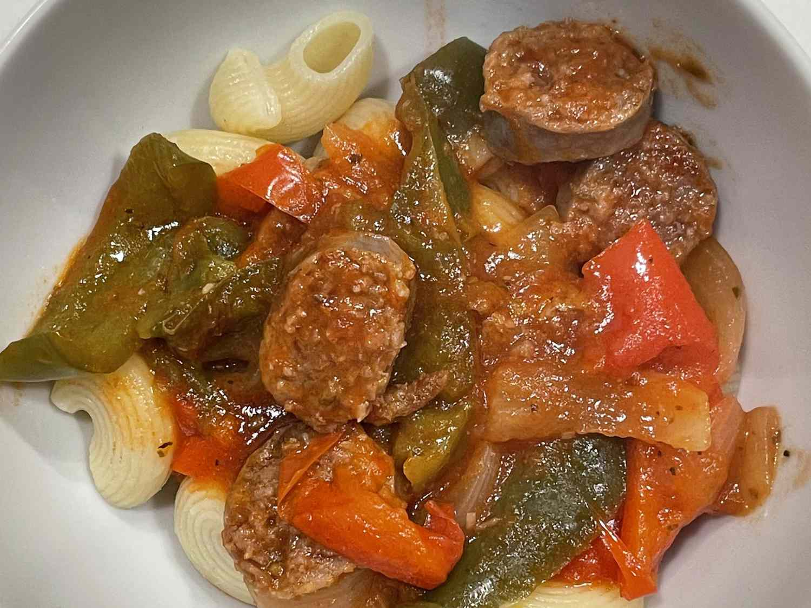

Easy Sausage, Peppers and Onions with Elbows

Description
This easy throw-together recipe is always a hit with families.
Ingredients
- 1 pound sweet Italian sausages
- 1 pound hot Italian sausages
- 2 green bell peppers, sliced
- 1 red bell pepper, sliced
- 1 large sweet onion (such as Vidalia®), sliced
- 1 (24 ounce) jar pasta sauce
- 1 (16 ounce) package elbow macaroni
Steps
- Place the sweet and hot sausages, green and red peppers, onion, and pasta sauce in a slow cooker. Add about 1/2 a jar of water. Cook on Low for 6 to 8 hours, or on High for 3 to 4 hours.
- Fill a large pot with lightly salted water and bring to a rolling boil over high heat. Once the water is boiling, stir in the macaroni, and return to a boil. Cook the pasta uncovered, stirring occasionally, until cooked through but still firm, about 8 minutes. Drain well.
- Slice the cooked sausages, then return to the slow cooker. Allow to rest for 10 minutes before serving the sausage, peppers, and onion over the macaroni.
Home